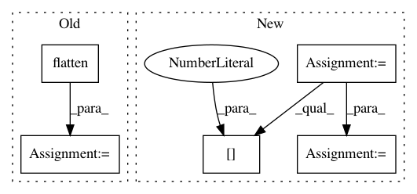

3238295386c5c5e9d39ed770e92a54326430b8ae,torch_geometric/visualization/mnist_graph.py,,,#,11
Before Change
adj = grid(torch.Size([28, 28]), connectivity=8)
position = grid_position(torch.Size([28, 28]))
input = image.flatten() / 255.0
// image = image_graph(image, input, adj, position, scale, offset)
// image = image_graph(image, grid_input, grid_adj, grid_position, scale,
// grid_offset)
After Change
position += scale * offset * rescale
adjs, positions, perm = graclus(adj, position, level=2)
adj, position = adjs[2], positions[2]
input = perm_input(input, perm)
input = input.view(-1, 4).sum(dim=1)
index = adj._indices().t()
In pattern: SUPERPATTERN
Frequency: 3
Non-data size: 5
Instances
Project Name: rusty1s/pytorch_geometric
Commit Name: 3238295386c5c5e9d39ed770e92a54326430b8ae
Time: 2017-11-21
Author: matthias.fey@tu-dortmund.de
File Name: torch_geometric/visualization/mnist_graph.py
Class Name:
Method Name:
Project Name: tensorflow/transform
Commit Name: 63455151483578a69b75197c2f7d880ff89a96a2
Time: 2020-04-24
Author: tf-transform-dev@google.com
File Name: tensorflow_transform/beam/impl.py
Class Name: _RunMetaGraphDoFn
Method Name: _get_passthrough_data_from_recordbatch
Project Name: deepchem/deepchem
Commit Name: ed7782f0f59f1eef6453f47633fe9e15bda00f84
Time: 2017-03-23
Author: peter.eastman@gmail.com
File Name: deepchem/models/tensorflow_models/__init__.py
Class Name: TensorflowGraphModel
Method Name: fit